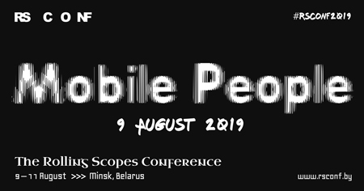
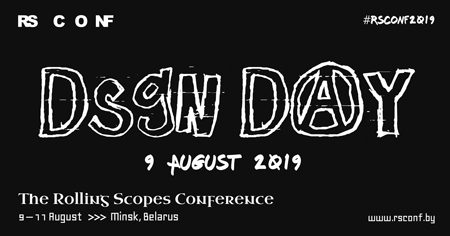

Mobile People Day,MBL 9 Aug Design Day, DSGN
9 Aug JS/Frontend,JS/FE
10 Aug JS/Frontend,JS/FE
11 Aug
"Mobile People" Crew
10min | RU Green Stage
Vladimir Ivanov | EPAM
40min | EN Green Stage
#Common
Dmitriy Movchan | Revolut
50min | RU Green Stage
#Android
Danis Tazetdinov | EPAM
50min | RU Blue Stage
#iOS
Alexander Blinov | Headhunter
50min | RU Green Stage
#Android
Anastasiia Voitova | Cossack Labs
50min | EN Blue Stage
#iOS
Elaine Dias Batista | SFEIR
50min | EN Green Stage
#Android
Muhammed Salih Guler | Onefootball GmbH
50min | EN Blue Stage
#Flutter
Pavel Strelchenko | Headhunter
50min | RU Green Stage
#Android
Aleksandr Denisov | EPAM
50min | EN Blue Stage
#Flutter
Alexey Bykov | Revolut
50min | RU Green Stage
#Android
Max Nikulin | Movavi
50min | RU Blue Stage
#iOS
Yonatan Levin | monday.com
50min | EN Green Stage
#Android
Mateusz Szklarek | EL Passion
50min | EN Blue Stage
#iOS
"Mobile People" Crew
20min | RU Green Stage
George Kvasnikov | Fantasy
60min | RU Red Stage
Sergey Kireev | AIC
60min | RU Red Stage
Pavel Kedich | Readymag
60min | RU Red Stage
Denis Trusilo | Pocket Rocket
60min | RU Red Stage
Nikita Zenchenko | EPAM
60min | RU Red Stage
Alexander Nelidkin | AIC
60min | EN Red Stage
Mitya Osadchuk | Mail.ru
60min | RU Red Stage
Kseniya Koltun | FaceMetrics
60min | RU Red Stage
Ihar Yukhnevich | Yukhnevich.com
60min | RU Red Stage
RS Crew
50min | RU Red Stage
Richard Westenra | QuantumBlack
30min | EN Red Stage
Никита Сидоров | Yandex
30min | RU Green Stage
Sergey Shalyapin | Oxagile
30min | EN Blue Stage
Madlaina Kalunder | FHNW University
40min | EN Red Stage
Alexander Shushunov | EPAM
40min | RU Green Stage
Moderator: Dzianis Sheka
40min | RU Blue Stage
Ilya Pukhalski | EPAM
30min | RU Red Stage
Irina Levina | LeverX Group
30min | RU Green Stage
30min | EN Blue Stage
Andre Gloukhmantchouk | Facebook
40min | RU Red Stage
Alexander Saft | Lifestream
40min | RU Green Stage
Moderator: Dzianis Sheka
40min | RU Blue Stage
Vojtech Miksu | Uber
30min | EN Red Stage
Scott Feinberg | Google
30min | EN Green Stage
30min | EN Blue Stage
Martin Splitt | Google
40min | EN Red Stage
Andrew Smirnov | IPONWEB
40min | RU Green Stage
40min | EN Blue Stage
Shawn Wang | Netlify
30min | EN Red Stage
Anton Bely | Yandex
30min | RU Green Stage
Moderator: Dzianis Sheka
40min | RU Blue Stage
TBD
30min Red Stage
Denis Artyuhovich | DAZN
30min | EN Green Stage
Milica Mihajlija | Mozilla TechSpeaker
30min | EN Red Stage
Pablo Birukov | Evolution Gaming
30min | EN Green Stage
3h | EN Blue Stage
Vladik Khononov | Invesus Group
40min | RU Red Stage
Artem Kunets | Align Technology
40min | RU Green Stage
3h | EN Blue Stage
Martin Woolley | Bluetooth SIG
30min | EN Red Stage
Kirill Knysh | Uber
30min | EN Green Stage
3h | EN Blue Stage
Ioana Chiorean | Cognizant Softvision / Mozilla
40min | EN Red Stage
Artur Kenzhaev | Yandex.Market
40min | RU Green Stage
3h | EN Blue Stage
Дима Королёв | Tinkoff
30min | RU Red Stage
Ekaterina Prigara | JetBrains
30min | EN Green Stage
Paul Yuhnovich | EPAM
30min | EN Blue Stage
Alex Gerasimov | wix.com
40min | EN Red Stage
Alexander Korotaev | Tinkoff
40min | RU Green Stage
Yan Ageenko | IT-Academy
40min | RU Blue Stage
Vitaly Friedman | Smashing Magazine
60min | EN Red Stage
Venkat Dinavahi | Turtle Inc
40min | EN Green Stage
August 9-11
3 Days, All streams
For those who wish to support the conference and help make it better.
August 10-11
2 Days, All streams
Access to JavaScript/Front-end streams during the weekend, tightly wrapped by The Rolling Scopes.
August 9
1 day, 2 streams
Access to mobile streams, mastered by the MobilePeople community.
August 9
1 day, 1 stream
Access to design stream, carefully baked by the DesignSpot community.
For all questions related to tickets,
contact us
Join our Telegram group RS Conf 2019
Follow us on Facebook and Twitter to be the first to learn the news
Our hashtag on social media is #rollingscopes. Or contact us directly on our email rolling.scopes@gmail.com